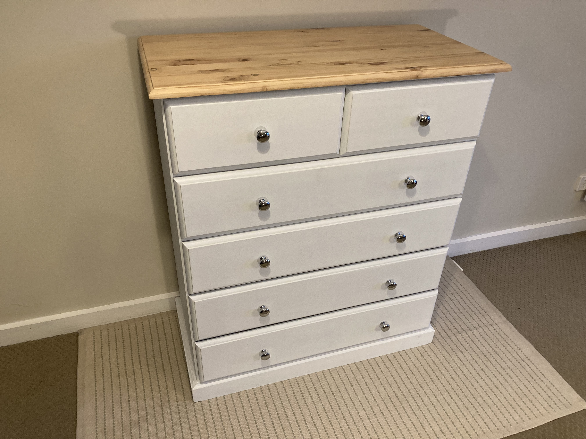
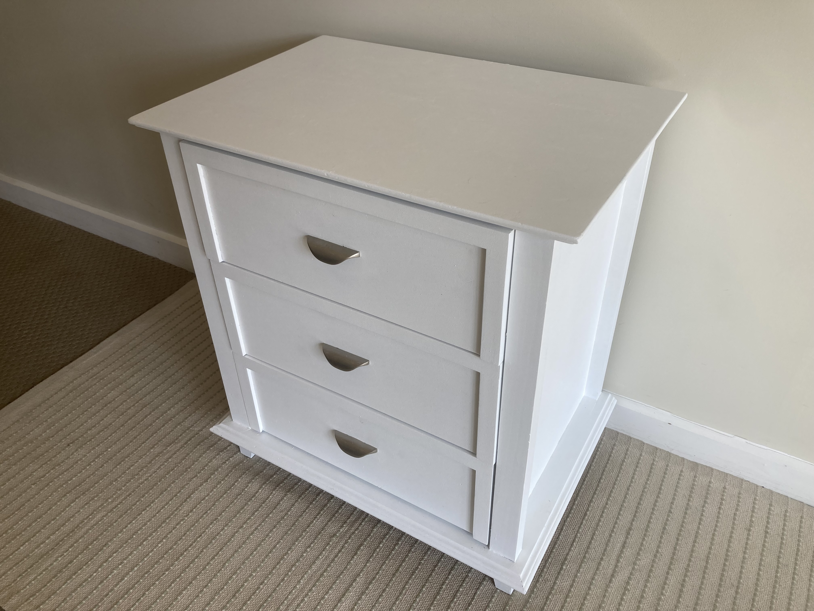
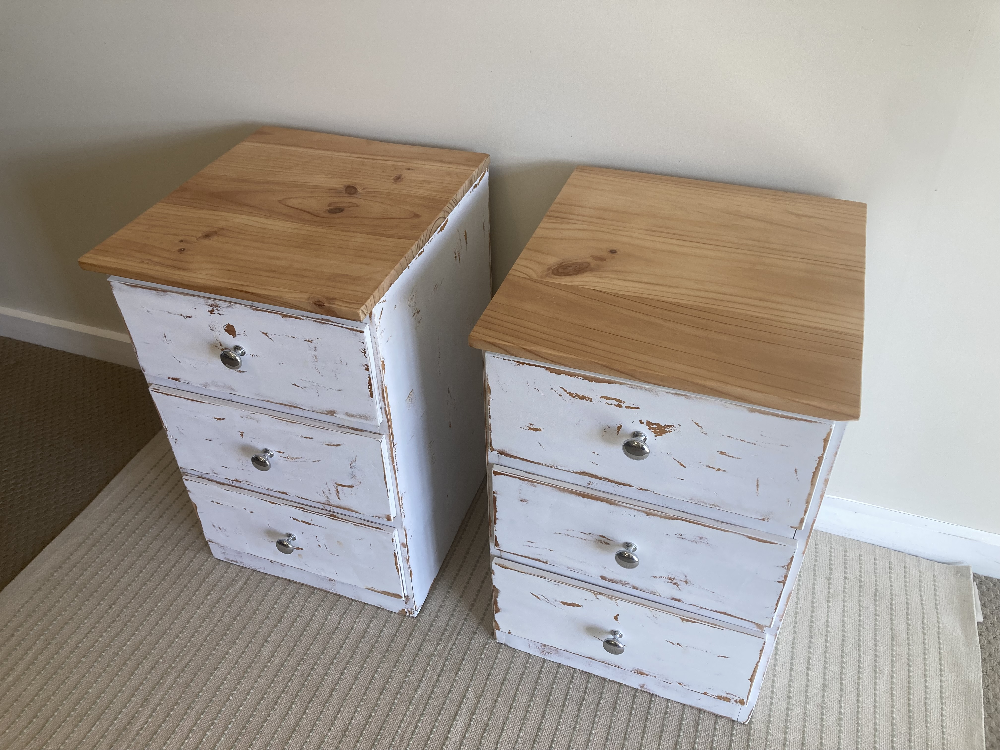
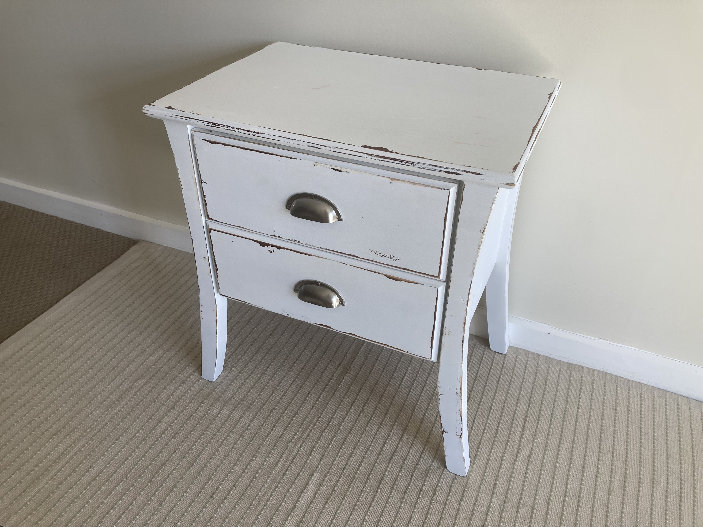
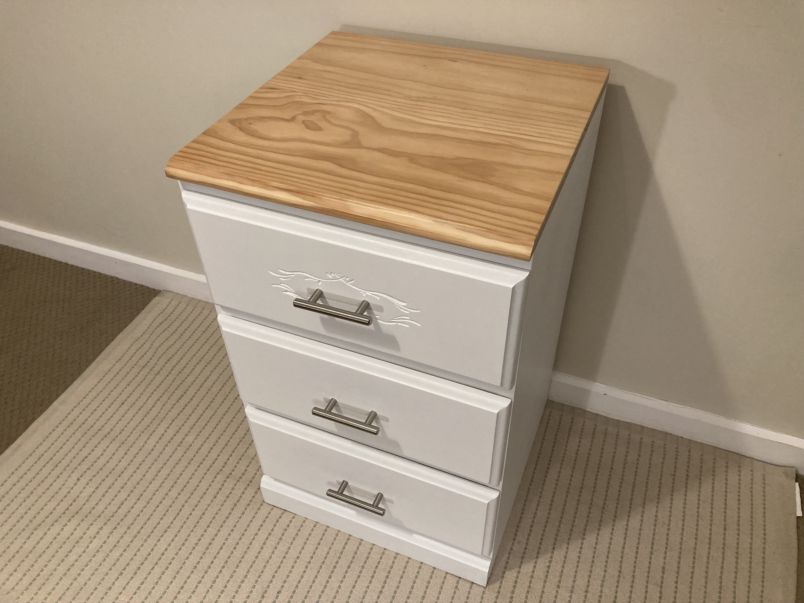

TIMBER / 05
Flipped Furniture
- WORK
- Furniture refurbishment / resale collection
- YEAR
- 2025–2026
- MEDIUM
- Hardwood and softwood furniture · Fillers · Primers · Paints · Varnishes · Hardware
- CONTEXT
- Independent personal project · Furniture restoration and resale

Overview
Flipped Furniture is an independent series of furniture restorations I undertook between 2025 and 2026. I sourced worn, damaged or unwanted pieces from local reuse centres, the tip and similar places, refurbished them in the workshop and sold them through Facebook Marketplace.
Projects ranged from bedside tables and tallboys to drawer units, side tables and coffee tables. The aim was to take furniture that might otherwise be discarded and make it desirable, functional and financially worthwhile to restore.
Design Brief
Give damaged or outdated furniture a second life through practical repair and a contemporary finish. Each piece needed to be structurally sound, suitable for a home and appealing to buyers, without letting material costs or labour overwhelm its resale value.
This was as much a small commercial experiment as a making project: good design decisions had to account for sourcing, durability, the time spent restoring each piece and what people were actually willing to buy.


Process
Most pieces started with a careful assessment of their condition. I removed damaged finishes by sanding, and sometimes with chemical paint stripper, before repairing chips, gaps, dents or old holes with timber filler. Where necessary I repaired timber components or replaced drawer runners and other fittings.
After preparing the surface, I primed and applied multiple layers of paint. Some pieces were finished with exposed, sanded and varnished timber tops; others were scuff-sanded to create a more distressed, coastal feel. The final approach depended on the underlying timber, the existing design and the most suitable market for the piece.
One of the hardest parts was making good decisions before beginning. Furniture needed to be inexpensive enough to buy, in good enough condition to recover, and likely to sell at a price that justified the hours involved. Over time I learned which forms and finishes attracted buyers and which projects absorbed more work than their margins could support.


Outcome
Across multiple restorations, furniture that had been damaged or unwanted became useful and attractive again. The project built my skills in preparing finishes, repairing components, adapting designs and producing consistent results from imperfect starting materials.
It also taught me to judge a project through two lenses: the quality of the finished object and the realistic value of the work required to get it there. Saving a piece from landfill was satisfying, but making the process sustainable for my own time was equally important.